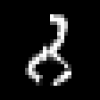

계속 +1만 골랐습니다
행동 정확도는 43.4%였지만, 목표에서 멈춘 경우는 없었습니다. 목표보다 작은 곳에서는 +1이 맞기 때문에 점수가 어느 정도 나왔던 것입니다. 이 숫자만 보면 문제를 놓치기 쉽습니다.
MNIST 튜토리얼 · 쉬운 해설판
‘학습한다’는 건 무엇을 바꾸는 걸까요?
정확도가 높은데도 왜 목표에 도착하지 못할까요?
원문의 실험을 처음부터 함께 따라가 봅니다. 어려운 용어를 외우기보다, 무엇을 시키고 → 어떻게 가르치고 → 무엇을 확인했는지를 이해하면 됩니다.
01 / 문제 이해하기
종이에 손으로 쓴 7이 있습니다. 지금 내가 서 있는 숫자는 3이고요. 목표인 7에 가까워지려면 어떻게 해야 할까요? 우선 1을 더해 4로 가면 됩니다.
이번 모델이 하는 일이 바로 이것입니다. 그림 속 숫자를 보고, 현재 숫자에서 1을 빼거나, 그대로 멈추거나, 1을 더하는 행동 중 하나를 고릅니다. MNIST는 이때 사용하는 손글씨 숫자 이미지 모음의 이름입니다.
한 번에 7로 점프하는 것은 아닙니다. 3에서 4로, 다시 5로 이동하면서 매번 새로 판단합니다. 7에 도착하면 0을 골라 멈춰야 성공입니다. 여기서 0은 ‘숫자 0으로 이동하라’가 아니라 ‘지금 자리에서 그만하라’는 뜻입니다.
이 실험에서는 긴 답변을 쓰는 대신, 정해진 세 선택지에 점수를 매깁니다. 프로그램은 그중 점수가 가장 높은 행동을 받아 실행합니다.
02 / 입력 이해하기
사람에게도 그림 한 장만 보여주면 무엇을 하라는 건지 알기 어렵겠죠. 모델에도 다음 세 가지를 함께 알려줍니다.
목표 숫자가 쓰인 손글씨 그림입니다. 목표가 7이라는 정답 숫자를 따로 알려주지는 않습니다.
‘현재 숫자는 3이다’라는 문장입니다. 실제 학습에서는 영어 문장을 사용했습니다.
목표에 가까워지는 행동을 고르라고 지시하고, −1·0·+1의 뜻을 설명합니다.
그러면 정답은 누가 알려줄까요? 학습을 준비하는 코드가 그림의 정답 숫자와 현재 숫자를 비교합니다. 목표가 7이고 현재가 3이면 정답 행동은 +1입니다. 이 정답은 모델에게 보여주는 힌트가 아니라, 모델의 답을 채점하는 기준으로 씁니다.
t는 목표, s는 현재 숫자입니다. t − s가 양수이면 +1, 0이면 멈춤, 음수이면 −1을 고릅니다. 즉 ‘목표가 더 크면 더하고, 작으면 빼고, 같으면 멈춘다’를 짧게 쓴 식입니다.
03 / 모델 이해하기
처음부터 모든 것을 배우게 하지는 않습니다. 이미지와 글을 함께 처리할 수 있는 Qwen3.5-0.8B를 바탕으로 씁니다. 이런 모델을 VLM이라고 부릅니다. 한국어로 풀면 ‘이미지와 언어를 함께 다루는 모델’입니다.
모델이 학습한다는 것은 내부의 숫자들, 즉 가중치를 조절한다는 뜻입니다. 이번에는 기반 모델의 가중치를 고정해 두고, LoRA라는 작은 추가 가중치를 학습합니다. 원본을 통째로 고치기보다 옆에 수정 메모를 붙이는 방식에 비유할 수 있습니다.
다만 LoRA는 모델 밖에서 답을 보정하는 장치가 아닙니다. 모델 내부 계산에 참여하며, 학습이 끝난 뒤 실제로 답을 고를 때도 함께 사용합니다.
기반 모델이 계산한 정보와 질문·선택지 정보를 받아, −1·0·+1에 각각 점수를 매기는 부분입니다. 이를 ‘판단부’라고 생각하면 편합니다. 이번에는 이 판단부도 함께 학습했습니다. 실제 구조는 단순히 출력값 세 개를 만드는 층보다 복잡하며, 세부 구조는 원문에서 볼 수 있습니다.
Jev는 이 글의 출발점이 된 decision model입니다. 실제 실험에서는 Qwen 모델에 Clef 방식의 판단부와 LoRA를 붙였습니다. 따라서 여기 나온 성능은 Jev 자체의 성능이 아닙니다.
처음에는 ‘기반 모델을 메모리에 가볍게 올리고, 일부 추가 가중치를 학습했다’ 정도로 이해해도 됩니다. 4bit는 기반 가중치를 저장하는 수치 표현과 관련이 있고, rank 16은 LoRA의 작은 행렬 크기를 정하는 값입니다. 모든 데이터와 계산이 4bit라는 뜻은 아닙니다.
04 / 학습 이해하기
그림, 현재 숫자, 선택지를 모델에 넣습니다. 이 묶음이 batch(배치)입니다. 본학습에서는 한 번에 32개를 처리했습니다.
이렇게 입력에서 출력을 계산하는 과정을 forward라고 합니다. 점수는 확률로 바꿀 수 있습니다.
이 값이 loss(손실)입니다. 정답 행동에 높은 확률을 주면 작아지고, 정답에 낮은 확률을 주면 커집니다. 확신하며 틀린 답은 더 큰 벌점을 받는 셈입니다.
backward(역전파)는 가중치를 어떻게 바꾸면 손실을 줄일 수 있을지 계산합니다. optimizer(최적화 알고리즘)는 이 정보를 이용해 LoRA와 판단부의 가중치를 실제로 수정합니다.
이 과정을 반복하면 학습입니다. 이번 실험은 정답 행동을 주고 가르치는 지도학습입니다. 행동을 해보고 보상을 받는 강화학습을 재현한 것은 아닙니다. Unsloth는 이 학습을 구성하고 실행하는 데 사용한 도구입니다.
본학습은 32개씩 처리한 뒤 가중치를 한 번 수정했습니다. 이를 600번 반복했으므로 총 32 × 600 = 19,200개의 학습쌍을 처리했습니다. 같은 자료를 다시 볼 수 있어서, 서로 다른 그림이 19,200장이라는 뜻도 아닙니다.
손실이 전반적으로 내려가면 학습 자료에 정답을 더 잘 주고 있다는 신호입니다. 중간에 튀는 점은 어려운 문제가 한 묶음에 들어왔기 때문일 수도 있습니다. 그렇지만 손실만 내려간다고 처음 보는 그림도 잘 푼다고 보장할 수는 없습니다. 별도의 검사가 필요합니다.
원문 4절 · 학습 과정 더 보기 ↗05 / 시행착오 이해하기
행동 정확도는 43.4%였지만, 목표에서 멈춘 경우는 없었습니다. 목표보다 작은 곳에서는 +1이 맞기 때문에 점수가 어느 정도 나왔던 것입니다. 이 숫자만 보면 문제를 놓치기 쉽습니다.
숫자 2·5·8 그림을 한 장씩 고르고, 각각 현재 숫자 0~9를 붙였습니다. 이렇게 만든 30쌍을 반복 학습하니 모두 맞혔습니다. 적어도 이 코드로 정답을 배우는 것은 가능하다는 확인입니다. 새로운 그림에서도 잘한다는 증명은 아닙니다.
작은 실험에서 외운 가중치를 이어 쓰지 않고, 사전학습 모델에서 새로 시작했습니다. 각 그림에 현재 숫자 10개를 붙여 20,000쌍을 만들었습니다. 정답이 ‘멈춤’인 문제는 적어서, 부족한 행동의 문제를 중복으로 뽑아 학습 기회를 맞췄습니다.
이때 판단부의 학습률, 배치 크기, 입력 언어, 총 학습량을 함께 바꿨습니다. 결과가 좋아졌다고 해서 “배치를 키운 덕분”이라고 하나만 원인으로 꼽을 수는 없습니다. 원인을 알고 싶다면 나머지 조건을 맞추고 하나씩 바꿔야 합니다.
| 자료 | 이 실험에서 하는 일 |
|---|---|
| 학습 · 2,000장 | 문제를 풀고 가중치를 고칩니다. |
| 중간 검증 · 100장 | 학습 상태를 확인합니다. 중간에는 첫 30장, 마지막에는 100장을 봅니다. |
| 확률 보정 · 50장 | 모델이 내는 확률의 크기를 조정합니다. |
| 최종 평가 · 1,000장 | 저장한 모델의 행동과 이동 경로를 확인합니다. |
06 / 결과 이해하기
10,000번 판단 중 9,770번 정답
10,000개 출발점 중 9,362개 성공
두 번째 지표를 원문에서는 에피소드 성공률이라고 부릅니다. 에피소드는 출발해서 이동하다가 끝나는 한 차례의 과정입니다. 한 번이라도 잘못 멈추거나 두 숫자 사이를 오가면 전체 과정이 실패할 수 있습니다.
3 → 4 → 5까지는 잘 갔어도 성공이 아닙니다. 더구나 3에서 출발한 경우뿐 아니라 4에서 출발한 경우도 같은 5에서 멈출 수 있습니다. 그래서 한 곳의 잘못된 판단이 여러 출발점의 실패로 이어집니다.
실제로 행동 오답은 230개였지만, 실패한 이동 과정은 638개였습니다. 그중 434개는 잘못된 자리에서 멈췄고, 203개는 같은 상태를 반복했으며, 1개는 숫자 범위를 벗어났습니다.

그런데 모델은 2를 목표로 삼은 것처럼 행동했습니다. 다만 행동만 보고 내부의 어느 부분이 잘못됐는지까지 확정할 수는 없습니다.
평가는 그림 1,000장마다 현재 숫자 10개를 붙여 진행했습니다. 같은 그림에서 나온 판단끼리는 관련이 있으므로, ‘서로 독립적인 그림 10,000장을 시험했다’고 읽으면 안 됩니다. 또한 공식 테스트의 앞 1,000장을 사용한 결과입니다.
원문 9절 · 실패 이미지와 실제 예측 살펴보기 ↗07 / 확률 이해하기
모델이 +1에 확률 0.9를 줬다고 해봅시다. 이는 모델이 다른 선택지보다 +1에 훨씬 높은 점수를 줬다는 뜻입니다. 그 한 번의 답이 반드시 맞는다는 보장은 아닙니다.
확률 0.9라고 한 사례를 많이 모았을 때 실제로도 약 90%가 맞는다면, 그 확률은 판단의 신뢰도를 표현하는 데 도움이 됩니다. 이 관계를 맞추는 작업을 확률 보정(calibration)이라고 합니다.
이번에는 행동별 점수를 같은 양수 T로 나눈 뒤 확률로 바꾸는 방법을 썼습니다. T를 크게 하면 확률이 더 고르게 퍼지고, 작게 하면 가장 높은 점수 쪽으로 더 몰립니다. 점수 순서는 그대로이므로, 가장 높은 행동을 고르는 결과는 바뀌지 않습니다.
실제 테스트에서는 오답 230개 중 141개에 90% 이상의 확률을 줬습니다. ‘확률이 높으니 안전하게 실행해도 된다’고 가정하기 어려운 이유입니다. 독립적인 테스트에서 보정 전후를 비교한 기록도 없어, 보정의 개선 효과까지 단정할 수는 없습니다.
08 / 직접 살펴보기
용어가 낯설었다면, 이제는 다음 세 질문을 떠올리면서 기록을 살펴보세요.
실행을 선택하고 처음과 마지막 배치를 비교해 보세요. 정답에 준 확률과 실제 손실을 함께 볼 수 있습니다.
어떤 그림에서 실패했을까? ↗오류율 표에서 목표와 현재 숫자를 선택하고, 아래의 개별 이미지와 이동 경로를 살펴보세요.
답 하나를 고르는 데 얼마나 걸릴까? ↗단건 추론은 평균 약 94ms였습니다. 여러 건을 묶어 처리한 속도를 한 건의 응답 시간과 혼동하지 않는 것이 중요합니다.
본학습에는 중간 검증을 포함해 약 20.82분이 걸렸습니다. 이 값과 추론 시간은 원문의 특정 장비와 측정 조건에서 나온 결과입니다. 페이지의 탐색기는 저장된 실험 기록을 보여주며, 브라우저에서 모델을 새로 학습하거나 실행하는 것은 아닙니다.
이 문제는 숫자 인식 모델에 비교 규칙을 붙여서도 풀 수 있습니다. 이번 실험은 decision model의 학습 과정을 이해하기 위한 예제이며, 다른 방법보다 우수함을 입증한 비교 실험은 아닙니다.